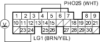
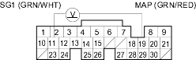

DTC 45: Fuel System Malfunction
NOTE: If some of the DTCs listed below are stored at the same time as DTC 45, troubleshoot those DTCs first, then recheck for DTC 45.
DTC 3: MAP Sensor
DTC 41: Primary HO2S (Sensor 1) Heater
DTC 63: Secondary (Sensor 2) HO2S
DTC 65: Secondary HO2S (Sensor 2) Heater
DTC 12: EGR System
DTC 22: VTEC System
- Recheck the fuel pressure (see page 11-132).
Is fuel pressure OK?
YES |
- Go to step 2. |
NO |
- Check these items: |

- If the pressure is too high. Check the fuel pressure regulator.
- If the pressure is too low. Check the fuel pump, the fuel feed pipe, the fuel filter, and the fuel pressure regulator.
- Start the engine. Hold the engine at 3,000 rpm (min-1) with no load (in Park or neutral) until the radiator fan comes on.
- Measure voltage between ECM/PCM connector terminals A6 and A24.

Does it stay at less than 0.3 V or more than 0.6 V?
YES |
- Replace the primary HO2S (Sensor 1). |
NO |
- Go to step 4. |
- Turn the ignition switch OFF.
- With a vacuum pump, apply vacuum to the EVAP canister purge valve from the intake manifold side.
Does it hold vacuum?
YES |
- Go to step 6. |
NO |
- Replace the EVAP canister purge valve. |
- Turn the ignition switch ON (II).
- Measure voltage between ECM/PCM connector terminals A11 and A19.

Is there approx. 3 V?
YES |
- Go to step 8. |
NO |
- Replace the MAP sensor. |
- Start the engine.
- Measure voltage between ECM/PCM connector terminals A11 and A19.

Is there 1.5 V or less within 1 second after starting the engine?
YES |
- Check the valve clearance and adjust if necessary. If the valve clearances are OK, replace the injector. |
NO |
- Replace the MAP sensor. |